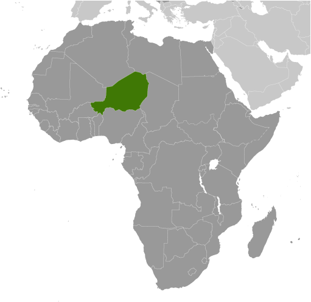
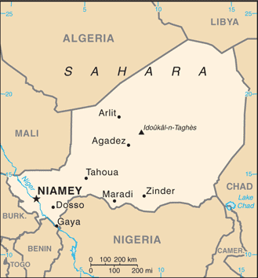
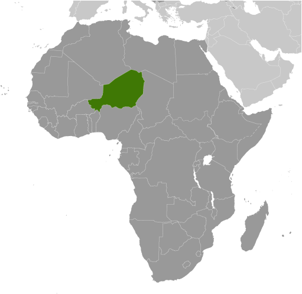
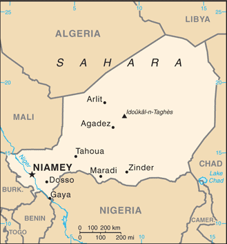

-
Introduction :: Niger
-
Background:Niger became independent from France in 1960 and experienced single-party and military rule until 1991, when Gen. Ali SAIBOU was forced by public pressure to allow multiparty elections, which resulted in a democratic government in 1993. Political infighting brought the government to a standstill and in 1996 led to a coup by Col. Ibrahim BARE. In 1999, BARE was killed in a counter coup by military officers who restored democratic rule and held elections that brought Mamadou TANDJA to power in December of that year. TANDJA was reelected in 2004 and in 2009 spearheaded a constitutional amendment allowing him to extend his term as president. In February 2010, military officers led a coup that deposed TANDJA and suspended the constitution. ISSOUFOU Mahamadou was elected in April 2011 following the coup and reelected to a second term in early 2016. Niger is one of the poorest countries in the world with minimal government services and insufficient funds to develop its resource base. The largely agrarian and subsistence-based economy is frequently disrupted by extended droughts common to the Sahel region of Africa. A Tuareg rebellion emerged in 2007 and ended in 2009. Niger is facing increased security concerns on its borders from various external threats including insecurity in Libya, spillover from the conflict in Mali, and violent extremism in northeastern Nigeria.
-
Geography :: Niger
-
Location:Western Africa, southeast of AlgeriaGeographic coordinates:16 00 N, 8 00 EMap references:AfricaArea:total: 1.267 million sq kmland: 1,266,700 sq kmwater: 300 sq kmcountry comparison to the world: 23Area - comparative:slightly less than twice the size of TexasLand boundaries:total: 5,834 kmborder countries (7): Algeria 951 km, Benin 277 km, Burkina Faso 622 km, Chad 1196 km, Libya 342 km, Mali 838 km, Nigeria 1608 kmCoastline:0 km (landlocked)Maritime claims:none (landlocked)Climate:desert; mostly hot, dry, dusty; tropical in extreme southTerrain:predominately desert plains and sand dunes; flat to rolling plains in south; hills in northElevation:mean elevation: 474 melevation extremes: 200 m lowest point: Niger River2022 highest point: Idoukal-n-TaghesNatural resources:uranium, coal, iron ore, tin, phosphates, gold, molybdenum, gypsum, salt, petroleumLand use:agricultural land: 35.1% (2011 est.)arable land: 12.3% (2011 est.) / permanent crops: 0.1% (2011 est.) / permanent pasture: 22.7% (2011 est.)forest: 1% (2011 est.)other: 63.9% (2011 est.)Irrigated land:1,000 sq km (2012)Population distribution:majority of the populace is located in the southernmost extreme of the country along the border with Nigeria and BeninNatural hazards:recurring droughtsEnvironment - current issues:overgrazing; soil erosion; deforestation; desertification; contaminated water; inadequate potable water; wildlife populations (such as elephant, hippopotamus, giraffe, and lion) threatened because of poaching and habitat destructionEnvironment - international agreements:party to: Biodiversity, Climate Change, Climate Change-Kyoto Protocol, Desertification, Endangered Species, Environmental Modification, Hazardous Wastes, Ozone Layer Protection, Wetlandssigned, but not ratified: Law of the SeaGeography - note:landlocked; one of the hottest countries in the world; northern four-fifths is desert, southern one-fifth is savanna, suitable for livestock and limited agriculture
-
People and Society :: Niger
-
Population:19,866,231 (July 2018 est.)country comparison to the world: 59Nationality:noun: Nigerien(s)adjective: NigerienEthnic groups:Hausa 53.1%, Zarma/Songhai 21.2%, Tuareg 11%, Fulani (Peul) 6.5%, Kanuri 5.9%, Gurma 0.8%, Arab 0.4%, Tubu 0.4%, other/unavailable 0.9% (2006 est.)Languages:French (official), Hausa, DjermaReligions:Muslim 99.3%, Christian .3%, animist .2%, none .1% (2012 est.)Demographic profile:
Niger has the highest total fertility rate (TFR) of any country in the world, averaging close to 7 children per woman in 2016. A slight decline in fertility over the last few decades has stalled. This leveling off of the high fertility rate is in large part a product of the continued desire for large families. In Niger, the TFR is lower than the desired fertility rate, which makes it unlikely that contraceptive use will increase. The high TFR sustains rapid population growth and a large youth population – almost 70% of the populace is under the age of 25. Gender inequality, including a lack of educational opportunities for women and early marriage and childbirth, also contributes to high population growth.
Because of large family sizes, children are inheriting smaller and smaller parcels of land. The dependence of most Nigeriens on subsistence farming on increasingly small landholdings, coupled with declining rainfall and the resultant shrinkage of arable land, are all preventing food production from keeping up with population growth.
For more than half a century, Niger's lack of economic development has led to steady net outmigration. In the 1960s, Nigeriens mainly migrated to coastal West African countries to work on a seasonal basis. Some headed to Libya and Algeria in the 1970s to work in the booming oil industry until its decline in the 1980s. Since the 1990s, the principal destinations for Nigerien labor migrants have been West African countries, especially Burkina Faso and Cote d’Ivoire, while emigration to Europe and North America has remained modest. During the same period, Niger’s desert trade route town Agadez became a hub for West African and other sub-Saharan migrants crossing the Sahara to North Africa and sometimes onward to Europe.
More than 60,000 Malian refugees have fled to Niger since violence between Malian government troops and armed rebels began in early 2012. Ongoing attacks by the Boko Haram Islamist insurgency, dating to 2013 in northern Nigeria and February 2015 in southeastern Niger, have pushed tens of thousands of Nigerian refugees and Nigerien returnees across the border to Niger and to displace thousands of locals in Niger’s already impoverished Diffa region.
Age structure:0-14 years: 48.68% (male 4,878,031 /female 4,793,021)15-24 years: 19.36% (male 1,899,879 /female 1,945,806)25-54 years: 26.02% (male 2,581,597 /female 2,587,913)55-64 years: 3.3% (male 340,032 /female 315,142)65 years and over: 2.64% (male 268,072 /female 256,738) (2018 est.)population pyramid: The World Factbook Field Image ModalAfrica :: Niger Print
The World Factbook Field Image ModalAfrica :: Niger Print Image DescriptionThis is the population pyramid for Niger. A population pyramid illustrates the age and sex structure of a country's population and may provide insights about political and social stability, as well as economic development. The population is distributed along the horizontal axis, with males shown on the left and females on the right. The male and female populations are broken down into 5-year age groups represented as horizontal bars along the vertical axis, with the youngest age groups at the bottom and the oldest at the top. The shape of the population pyramid gradually evolves over time based on fertility, mortality, and international migration trends.
Image DescriptionThis is the population pyramid for Niger. A population pyramid illustrates the age and sex structure of a country's population and may provide insights about political and social stability, as well as economic development. The population is distributed along the horizontal axis, with males shown on the left and females on the right. The male and female populations are broken down into 5-year age groups represented as horizontal bars along the vertical axis, with the youngest age groups at the bottom and the oldest at the top. The shape of the population pyramid gradually evolves over time based on fertility, mortality, and international migration trends.
For additional information, please see the entry for Population pyramid on the Definitions and Notes page under the References tab.Dependency ratios:total dependency ratio: 111.6 (2015 est.)youth dependency ratio: 106.2 (2015 est.)elderly dependency ratio: 5.4 (2015 est.)potential support ratio: 18.6 (2015 est.)Median age:total: 15.5 yearsmale: 15.4 yearsfemale: 15.7 years (2018 est.)country comparison to the world: 228Population growth rate:3.16% (2018 est.)country comparison to the world: 7Birth rate:43.6 births/1,000 population (2018 est.)country comparison to the world: 2Death rate:11.5 deaths/1,000 population (2018 est.)country comparison to the world: 20Net migration rate:-0.5 migrant(s)/1,000 population (2017 est.)country comparison to the world: 125Population distribution:majority of the populace is located in the southernmost extreme of the country along the border with Nigeria and BeninUrbanization:urban population: 16.4% of total population (2018)rate of urbanization: 4.27% annual rate of change (2015-20 est.)Major urban areas - population:1.214 million NIAMEY (capital) (2018)Sex ratio:at birth: 1.02 male(s)/female (2017 est.)0-14 years: 1.02 male(s)/female (2017 est.)15-24 years: 0.98 male(s)/female (2017 est.)25-54 years: 1 male(s)/female (2017 est.)55-64 years: 1.08 male(s)/female (2017 est.)65 years and over: 1.04 male(s)/female (2017 est.)total population: 1.01 male(s)/female (2017 est.)Mother's mean age at first birth:18.1 years (2012 est.)note: median age at first birth among women 25-29
Maternal mortality rate:553 deaths/100,000 live births (2015 est.)country comparison to the world: 17Infant mortality rate:total: 79.4 deaths/1,000 live births (2018 est.)male: 83.7 deaths/1,000 live births (2018 est.)female: 75 deaths/1,000 live births (2018 est.)country comparison to the world: 5Life expectancy at birth:total population: 56.3 years (2018 est.)male: 55 years (2018 est.)female: 57.7 years (2018 est.)country comparison to the world: 216Total fertility rate:6.35 children born/woman (2018 est.)country comparison to the world: 1Contraceptive prevalence rate:18.9% (2017)Health expenditures:5.8% of GDP (2014)country comparison to the world: 111Physicians density:0.02 physicians/1,000 population (2008)Drinking water source:improved: urban: 100% of populationrural: 48.6% of populationtotal: 58.2% of populationunimproved: urban: 0% of populationrural: 51.4% of populationtotal: 41.8% of population (2015 est.)Sanitation facility access:improved: urban: 37.9% of population (2015 est.)rural: 4.6% of population (2015 est.)total: 10.9% of population (2015 est.)unimproved: urban: 62.1% of population (2015 est.)rural: 95.4% of population (2015 est.)total: 89.1% of population (2015 est.)HIV/AIDS - adult prevalence rate:0.3% (2017 est.)country comparison to the world: 86HIV/AIDS - people living with HIV/AIDS:36,000 UNAIDS, AIDSinfo Online Database, 2017, 7/31/18 (2017 est.)country comparison to the world: 68HIV/AIDS - deaths:1,800 (2017 est.)country comparison to the world: 55Major infectious diseases:degree of risk: very high (2016)food or waterborne diseases: bacterial and protozoal diarrhea, hepatitis A, and typhoid fever (2016)vectorborne diseases: malaria and dengue fever (2016)water contact diseases: schistosomiasis (2016)animal contact diseases: rabies (2016)respiratory diseases: meningococcal meningitis (2016)Obesity - adult prevalence rate:5.5% (2016)country comparison to the world: 177Children under the age of 5 years underweight:31.7% (2016)country comparison to the world: 6Education expenditures:6% of GDP (2015)country comparison to the world: 35Literacy:definition: age 15 and over can read and write (2015 est.)total population: 19.1% (2015 est.)male: 27.3% (2015 est.)female: 11% (2015 est.)School life expectancy (primary to tertiary education):total: 5 years (2012)male: 6 years (2012)female: 5 years (2012)Unemployment, youth ages 15-24:total: 0.5% (2011 est.)male: 0.8% (2011 est.)female: 0.2% (2011 est.)country comparison to the world: 173 -
Government :: Niger
-
Country name:conventional long form: Republic of Nigerconventional short form: Nigerlocal long form: Republique du Nigerlocal short form: Nigeretymology: named for the Niger River that passes through the southwest of the country; from a native term "Ni Gir" meaning "River Gir"
note: pronounced nee-zher
Government type:semi-presidential republicCapital:name: Niameygeographic coordinates: 13 31 N, 2 07 Etime difference: UTC+1 (6 hours ahead of Washington, DC, during Standard Time)Administrative divisions:7 regions (regions, singular - region) and 1 capital district* (communaute urbaine); Agadez, Diffa, Dosso, Maradi, Niamey*, Tahoua, Tillaberi, ZinderIndependence:3 August 1960 (from France)National holiday:Republic Day, 18 December (1958); note - commemorates the founding of the Republic of Niger which predated independence from France in 1960Constitution:history: several previous; passed by referendum 31 October 2010, entered into force 25 November 2010 (2017)amendments: proposed by the president of the republic or by the National Assembly; consideration of amendments requires at least three-fourths majority vote by the Assembly; passage requires at least four-fifths majority vote; if disapproved, the proposed amendment is dropped or submitted to a referendum; constitutional articles on the form of government, the multiparty system, the separation of state and religion, disqualification of Assembly members, amendment procedures, and amnesty of participants in the 2010 coup cannot be amended; amended 2011 (2017)Legal system:mixed legal system of civil law (based on French civil law), Islamic law, and customary lawInternational law organization participation:has not submitted an ICJ jurisdiction declaration; accepts ICCt jurisdictionCitizenship:citizenship by birth: nocitizenship by descent only: at least one parent must be a citizen of Nigerdual citizenship recognized: yesresidency requirement for naturalization: unknownSuffrage:18 years of age; universalJudicial branch:highest courts: Constitutional Court (consists of 7 judges); High Court of Justice (consists of 7 members)judge selection and term of office: Constitutional Court judges nominated/elected - 1 by the president of the Republic, 1 by the president of the National Assembly, 2 by peer judges, 2 by peer lawyers, 1 law professor by peers, and 1 from within Nigerien society; all appointed by the president; judges serve 6-year nonrenewable terms with one-third of membership renewed every 2 years; High Judicial Court members selected from among the legislature and judiciary; members serve 5-year termssubordinate courts: Court of Cassation; Council of State; Court of Finances; various specialized tribunals and customary courtsExecutive branch:chief of state: President ISSOUFOU Mahamadou (since 7 April 2011)head of government: Prime Minister Brigi RAFINI (since 7 April 2011)cabinet: Cabinet appointed by the presidentelections/appointments: president directly elected by absolute majority popular vote in 2 rounds if needed for a 5-year term (eligible for a second term); election last held on 21 February 2016 with a runoff on 20 March 2016 (next to be held in 2021); prime minister appointed by the president, authorized by the National Assemblyelection results: ISSOUFOU Mahamadou reelected president in second round; percent of vote in first round - ISSOUFOU Mahamadou (PNDS-Tarrayya) 48.6%, Hama AMADOU (MODEN/FA Lumana Africa) 17.8%, Seini OUMAROU (MNSD-Nassara) 11.3%, other 22.3%; percent of vote in second round - ISSOUFOU Mahamadou 92%, Hama AMADOU 8%Legislative branch:description: unicameral National Assembly or Assemblee Nationale (171 seats; 158 members directly elected from 8 multi-member constituencies in 7 regions and Niamey by party-list proportional representation, 8 reserved for minorities elected in special single-seat constituencies by simple majority vote, 5 seats reserved for Nigeriens living abroad - l seat per continent - elected in single-seat constituencies by simple majority vote; members serve 5-year terms); note - the number of National Assembly seats increased from 113 to 171 in the February 2016 legislative electionelections: last held on 21 February 2016 (next to be held in 2021)election results: percent of vote by party - PNDS-Tarrayya 44.1%, MODEN/FA Lumana 14.7%, MNSD-Nassara 11.8%, MPR-Jamhuriya 7.1%, MNRD Hankuri-PSDN Alheri 3.5%, MPN-Kishin Kassa 2.9%, ANDP-Zaman Lahiya 2.4%, RSD-Gaskiya 2.4%, CDS-Rahama 1.8%, CPR-Inganci 1.8%, RDP-Jama'a 1.8%, AMEN AMIN 1.8%, other 3.9%; seats by party - PNDS-Tarrayya 75, MODEN/FA Lumana 25, MNSD-Nassara 20, MPR-Jamhuriya 12, MNRD Hankuri-PSDN Alheri 6, MPN-Kishin Kassa 5, ANDP-Zaman Lahiya 4, RSD-Gaskiya 4, CDS-Rahama 3, CPR-Inganci 3, RDP-Jama'a 3, RDP-Jama'a 3, AMEN AMIN 3, other 8Political parties and leaders:Alliance of Movements for the Emergence of Niger or AMEN AMIN [Omar Hamidou TCHIANA]
Congress for the Republic or CPR-Inganci [Kassoum MOCTAR]
Democratic Alliance for Niger or ADN-Fusaha [Habi Mahamadou SALISSOU]
Democratic and Social Convention-Rahama or CDS-Rahama [Abdou LABO]
National Movement for the Development of Society-Nassara or MNSD-Nassara [Seini OUMAROU]
Nigerien Alliance for Democracy and Progress-Zaman Lahiya or ANDP-Zaman Lahiya [Moussa Moumouni DJERMAKOYE]
Nigerien Democratic Movement for an African Federation or MODEN/FA Lumana [Hama AMADOU]
Nigerien Movement for Democratic Renewal or MNRD-Hankuri [Mahamane OUSMANE]
Nigerien Party for Democracy and Socialism or PNDS-Tarrayya [Mahamadou ISSOUFOU]
Nigerien Patriotic Movement or MPN-Kishin Kassa [Ibrahim YACOUBA]
Party for Socialism and Democracy in Niger or PSDN-Alheri
Patriotic Movement for the Republic or MPR-Jamhuriya [Albade ABOUBA]
Rally for Democracy and Progress-Jama'a or RDP-Jama'a [Hamid ALGABID]
Social and Democratic Rally or RSD-Gaskiyya [Amadou CHEIFFOU]
Social Democratic Party or PSD-Bassira [Mohamed BEN OMAR]
Union for Democracy and the Republic-Tabbat or UDR-Tabbat [Amadou Boubacar CISSE]note: the SPLM and SPLM-DC are banned political parties
International organization participation:ACP, AfDB, AU, CD, ECOWAS, EITI (compliant country), Entente, FAO, FZ, G-77, IAEA, IBRD, ICAO, ICCt, ICRM, IDA, IDB, IFAD, IFC, IFRCS, ILO, IMF, Interpol, IOC, IOM, IPU, ISO (correspondent), ITSO, ITU, ITUC (NGOs), MIGA, MINUSMA, MONUSCO, NAM, OIC, OIF, OPCW, UN, UNCTAD, UNESCO, UNIDO, UNMIL, UNOCI, UNWTO, UPU, WADB (regional), WAEMU, WCO, WFTU (NGOs), WHO, WIPO, WMO, WTODiplomatic representation in the US:chief of mission: Ambassador Hassana ALIDOU (since 23 February 2015)chancery: 2204 R Street NW, Washington, DC 20008telephone: [1] (202) 483-4224 through 4227FAX: [1] (202) 483-3169Diplomatic representation from the US:chief of mission: Ambassador Eric P. WHITAKER (since 26 January 2018)embassy: BP 11201, Rue Des Ambassades, Niameymailing address: 2420 Niamey Place, Washington DC 20521-2420telephone: [227] 20-72-26-61FAX: [227] 20-73-55-60Flag description:three equal horizontal bands of orange (top), white, and green with a small orange disk centered in the white band; the orange band denotes the drier northern regions of the Sahara; white stands for purity and innocence; green symbolizes hope and the fertile and productive southern and western areas, as well as the Niger River; the orange disc represents the sun and the sacrifices made by the peoplenote: similar to the flag of India, which has a blue spoked wheel centered in the white band
National symbol(s):zebu; national colors: orange, white, greenNational anthem:name: "La Nigerienne" (The Nigerien)lyrics/music: Maurice Albert THIRIET/Robert JACQUET and Nicolas Abel Francois FRIONNETnote: adopted 1961
-
Economy :: Niger
-
Economy - overview:
Niger is a landlocked, sub-Saharan nation, whose economy centers on subsistence crops, livestock, and some of the world's largest uranium deposits. Agriculture contributes approximately 40% of GDP and provides livelihood for over 80% of the population. The UN ranked Niger as the second least developed country in the world in 2016 due to multiple factors such as food insecurity, lack of industry, high population growth, a weak educational sector, and few prospects for work outside of subsistence farming and herding.
Since 2011 public debt has increased due to efforts to scale-up public investment, particularly that related to infrastructure, as well as due to increased security spending. The government relies on foreign donor resources for a large portion of its fiscal budget. The economy in recent years has been hurt by terrorist activity near its uranium mines and by instability in Mali and in the Diffa region of the country; concerns about security have resulted in increased support from regional and international partners on defense. Low uranium prices, demographics, and security expenditures may continue to put pressure on the government’s finances.
The Government of Niger plans to exploit oil, gold, coal, and other mineral resources to sustain future growth. Although Niger has sizable reserves of oil, the prolonged drop in oil prices has reduced profitability. Food insecurity and drought remain perennial problems for Niger, and the government plans to invest more in irrigation. Niger’s three-year $131 million IMF Extended Credit Facility (ECF) agreement for the years 2012-15 was extended until the end of 2016. In February 2017, the IMF approved a new 3-year $134 million ECF. In June 2017, The World Bank’s International Development Association (IDA) granted Niger $1 billion over three years for IDA18, a program to boost the country’s development and alleviate poverty. A $437 million Millennium Challenge Account compact for Niger, commencing in FY18, will focus on large-scale irrigation infrastructure development and community-based, climate-resilient agriculture, while promoting sustainable increases in agricultural productivity and sales.
Formal private sector investment needed for economic diversification and growth remains a challenge, given the country’s limited domestic markets, access to credit, and competitiveness. Although President ISSOUFOU is courting foreign investors, including those from the US, as of April 2017, there were no US firms operating in Niger. In November 2017, the National Assembly passed the 2018 Finance Law that was geared towards raising government revenues and moving away from international support.
GDP (purchasing power parity):$21.86 billion (2017 est.)$20.84 billion (2016 est.)$19.87 billion (2015 est.)note: data are in 2017 dollars
country comparison to the world: 146GDP (official exchange rate):$8.224 billion (2017 est.) (2017 est.)GDP - real growth rate:4.9% (2017 est.)4.9% (2016 est.)4.3% (2015 est.)country comparison to the world: 55GDP - per capita (PPP):$1,200 (2017 est.)$1,100 (2016 est.)$1,100 (2015 est.)note: data are in 2017 dollars
country comparison to the world: 224Gross national saving:22.4% of GDP (2017 est.)20.6% of GDP (2016 est.)21.2% of GDP (2015 est.)country comparison to the world: 80GDP - composition, by end use:household consumption: 70.2% (2017 est.)government consumption: 9.4% (2017 est.)investment in fixed capital: 38.6% (2017 est.)investment in inventories: 0% (2017 est.)exports of goods and services: 16.4% (2017 est.)imports of goods and services: -34.6% (2017 est.)GDP - composition, by sector of origin:agriculture: 41.6% (2017 est.)industry: 19.5% (2017 est.)services: 38.7% (2017 est.)Agriculture - products:cowpeas, cotton, peanuts, millet, sorghum, cassava (manioc, tapioca), rice; cattle, sheep, goats, camels, donkeys, horses, poultryIndustries:uranium mining, petroleum, cement, brick, soap, textiles, food processing, chemicals, slaughterhousesIndustrial production growth rate:6% (2017 est.)country comparison to the world: 41Labor force:6.5 million (2017 est.)country comparison to the world: 70Labor force - by occupation:agriculture: 79.2%industry: 3.3%services: 17.5% (2012 est.)Unemployment rate:0.3% (2017 est.)0.3% (2016 est.)country comparison to the world: 3Population below poverty line:45.4% (2014 est.)Distribution of family income - Gini index:34 (2014)50.5 (1995)country comparison to the world: 105Budget:revenues: 1.757 billion (2017 est.)expenditures: 2.171 billion (2017 est.)Taxes and other revenues:21.4% (of GDP) (2017 est.)country comparison to the world: 140Budget surplus (+) or deficit (-):-5% (of GDP) (2017 est.)country comparison to the world: 169Public debt:45.3% of GDP (2017 est.)45.2% of GDP (2016 est.)country comparison to the world: 115Fiscal year:calendar yearInflation rate (consumer prices):2.4% (2017 est.)0.2% (2016 est.)country comparison to the world: 121Central bank discount rate:4.25% (31 December 2015)4.25% (31 December 2014)country comparison to the world: 95Commercial bank prime lending rate:5.4% (31 December 2017 est.)5.3% (31 December 2016 est.)country comparison to the world: 137Stock of narrow money:$1.804 billion (31 December 2017 est.)$1.511 billion (31 December 2016 est.)country comparison to the world: 136Stock of broad money:$1.804 billion (31 December 2017 est.)$1.511 billion (31 December 2016 est.)country comparison to the world: 145Stock of domestic credit:$1.506 billion (31 December 2017 est.)$1.196 billion (31 December 2016 est.)country comparison to the world: 162Current account balance:-$1.16 billion (2017 est.)-$1.181 billion (2016 est.)country comparison to the world: 147Exports:$4.143 billion (2017 est.)$1.101 billion (2016 est.)country comparison to the world: 117Exports - partners:France 30.2%, Thailand 18.3%, Malaysia 9.9%, Nigeria 8.3%, Mali 5%, Switzerland 4.9% (2017)Exports - commodities:uranium ore, livestock, cowpeas, onionsImports:$1.829 billion (2017 est.)$1.715 billion (2016 est.)country comparison to the world: 170Imports - commodities:foodstuffs, machinery, vehicles and parts, petroleum, cerealsImports - partners:France 28.8%, China 14.4%, Malaysia 5.7%, Nigeria 5.4%, Thailand 5.3%, US 5.1%, India 4.9% (2017)Reserves of foreign exchange and gold:$1.314 billion (31 December 2017 est.)$1.186 billion (31 December 2016 est.)country comparison to the world: 126Debt - external:$3.728 billion (31 December 2017 est.)$2.926 billion (31 December 2016 est.)country comparison to the world: 140Exchange rates:Communaute Financiere Africaine francs (XOF) per US dollar -605.3 (2017 est.)593.01 (2016 est.)593.01 (2015 est.)591.45 (2014 est.)494.42 (2013 est.) -
Energy :: Niger
-
Electricity access:population without electricity: 15.2 million (2013)electrification - total population: 15% (2013)electrification - urban areas: 62% (2013)electrification - rural areas: 4% (2013)Electricity - production:494.7 million kWh (2016 est.)country comparison to the world: 167Electricity - consumption:1.065 billion kWh (2016 est.)country comparison to the world: 153Electricity - exports:0 kWh (2016 est.)country comparison to the world: 177Electricity - imports:779 million kWh (2016 est.)country comparison to the world: 74Electricity - installed generating capacity:184,000 kW (2016 est.)country comparison to the world: 168Electricity - from fossil fuels:95% of total installed capacity (2016 est.)country comparison to the world: 45Electricity - from nuclear fuels:0% of total installed capacity (2017 est.)country comparison to the world: 156Electricity - from hydroelectric plants:0% of total installed capacity (2017 est.)country comparison to the world: 190Electricity - from other renewable sources:5% of total installed capacity (2017 est.)country comparison to the world: 108Crude oil - production:11,000 bbl/day (2017 est.)country comparison to the world: 78Crude oil - exports:0 bbl/day (2015 est.)country comparison to the world: 176Crude oil - imports:0 bbl/day (2015 est.)country comparison to the world: 176Crude oil - proved reserves:150 million bbl (1 January 2018 est.)country comparison to the world: 61Refined petroleum products - production:15,280 bbl/day (2015 est.)country comparison to the world: 94Refined petroleum products - consumption:14,000 bbl/day (2016 est.)country comparison to the world: 156Refined petroleum products - exports:5,422 bbl/day (2015 est.)country comparison to the world: 90Refined petroleum products - imports:3,799 bbl/day (2015 est.)country comparison to the world: 180Natural gas - production:0 cu m (2017 est.)country comparison to the world: 180Natural gas - consumption:0 cu m (2017 est.)country comparison to the world: 184Natural gas - exports:0 cu m (2017 est.)country comparison to the world: 163Natural gas - imports:0 cu m (2017 est.)country comparison to the world: 168Natural gas - proved reserves:0 cu m (1 January 2016 est.)country comparison to the world: 178Carbon dioxide emissions from consumption of energy:2.534 million Mt (2017 est.)country comparison to the world: 154
-
Communications :: Niger
-
Telephones - fixed lines:total subscriptions: 114,352 (2017 est.)subscriptions per 100 inhabitants: 1 (2017 est.)country comparison to the world: 139Telephones - mobile cellular:total subscriptions: 8,778,884 (2017 est.)subscriptions per 100 inhabitants: 46 (2017 est.)country comparison to the world: 90Telephone system:general assessment: inadequate; small system of wire, radio telephone communications, and microwave radio relay links concentrated in southwestern Niger (2016)domestic: combined fixed-line and mobile-cellular teledensity remains only about 50 per 100 persons despite a rapidly increasing cellular subscribership base; domestic satellite system with 3 earth stations and 1 planned (2016)international: country code - 227; satellite earth stations - 2 Intelsat (1 Atlantic Ocean and 1 Indian Ocean) (2016)Broadcast media:state-run TV station; 3 private TV stations provide a mix of local and foreign programming; state-run radio has only radio station with national coverage; about 30 private radio stations operate locally; as many as 100 community radio stations broadcast; transmissions of multiple international broadcasters are available (2007)Internet country code:.neInternet users:total: 805,702 (July 2016 est.)percent of population: 4.3% (July 2016 est.)country comparison to the world: 139Broadband - fixed subscriptions:total: 8,650 (2017 est.)subscriptions per 100 inhabitants: less than 1 (2017 est.)country comparison to the world: 171
-
Transportation :: Niger
-
National air transport system:number of registered air carriers: 2 (2015)inventory of registered aircraft operated by air carriers: 2 (2015)annual passenger traffic on registered air carriers: 15,242 (2015)annual freight traffic on registered air carriers: 0 mt-km (2015)Civil aircraft registration country code prefix:5U (2016)Airports:30 (2013)country comparison to the world: 116Airports - with paved runways:total: 10 (2017)2,438 to 3,047 m: 3 (2017)1,524 to 2,437 m: 6 (2017)914 to 1,523 m: 1 (2017)Airports - with unpaved runways:total: 20 (2013)1,524 to 2,437 m: 3 (2013)914 to 1,523 m: 15 (2013)under 914 m: 2 (2013)Heliports:1 (2013)Pipelines:464 km oilRoadways:total: 18,949 km (2010)paved: 3,912 km (2010)unpaved: 15,037 km (2010)country comparison to the world: 115Waterways:300 km (the Niger, the only major river, is navigable to Gaya between September and March) (2012)country comparison to the world: 93Merchant marine:total: 2 (2017)by type: oil tanker 1, other 1 (2017)country comparison to the world: 170
-
Military and Security :: Niger
-
Military expenditures:4% of GDP (2016)5.46% of GDP (2015)3.45% of GDP (2014)1.06% of GDP (2012)1.31% of GDP (2011)country comparison to the world: 15Military branches:Nigerien Armed Forces (Forces Armees Nigeriennes, FAN): Army, Nigerien Air Force (Force Aerienne du Niger) (2012)Military service age and obligation:18 is the legal minimum age for compulsory or voluntary military service; enlistees must be Nigerien citizens and unmarried; 2-year service term; women may serve in health care (2017)
-
Terrorism :: Niger
-
Terrorist groups - home based:Islamic State of Iraq and ash-sham networks in the Greater Sahara (ISGS):
aim(s): replace regional governments with an Islamic state
area(s) of operation: mostly concentrated along the Mali-Niger border region; targets primarily security forces (April 2018)Islamic State of Iraq and ash-Sham (ISIS)-West Africa:
aim(s): implement ISIS's strict interpretation of Sharia; replace the Nigerian Government with an Islamic state
area(s) of operation: based primarily in the southeast along the border with Nigeria, with its largest presence in northeast Nigeria and the Lake Chad region; targets primarily regional military installations, especially in the southeastern Diffa region (April 2018)Terrorist groups - foreign based:al-Mulathamun Battalion:
aim(s): replace several African governments, including Niger's government, with an Islamic state
area(s) of operation: conducts attacks against Nigerien military and security personnel; targets Westerners for kidnappings for ransom
(November 2018)al-Qa'ida-affiliated Jama'at Nusrat al-Islam wal-Muslimin (JNIM):
aim(s): establish an Islamic state centered in Mali
area(s) of operation: primarily based in northern and central Mali; targets Western and local interests in West Africa and Sahel; has claimed responsibility for attacks in Mali, Niger, and Burkina Faso
note: pledged allegiance to al-Qa'ida and AQIM; holds Western hostages; wages attacks against security and peacekeeping forces in Mali (April 2018)Boko Haram:
aim(s): establish an Islamic caliphate across Africa
area(s) of operation: conducts kidnappings, bombings, and assaults; responsible for displacing thousands of people and contributing to food insecurity
note: violently opposes any political or social activity associated with Western society, including voting, attending secular schools, and wearing Western dress (April 2018) -
Transnational Issues :: Niger
-
Disputes - international:Libya claims about 25,000 sq km in a currently dormant dispute in the Tommo regionlocation of Benin-Niger-Nigeria tripoint is unresolvedonly Nigeria and Cameroon have heeded the Lake Chad Commission's admonition to ratify the delimitation treaty that also includes the Chad-Niger and Niger-Nigeria boundariesthe dispute with Burkina Faso was referred to the ICJ in 2010Refugees and internally displaced persons:refugees (country of origin): 118,868 (Nigeria), 57,300 (Mali) (2018)IDPs: 104,288 (unknown how many of the 11,000 people displaced by clashes between government forces and the Tuareg militant group, Niger Movement for Justice, in 2007 are still displaced; inter-communal violence; Boko Haram attacks in southern Niger, 2015) (2018)
Africa ::
Niger